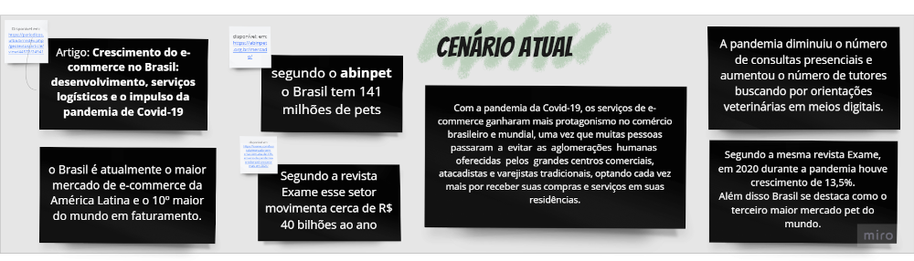
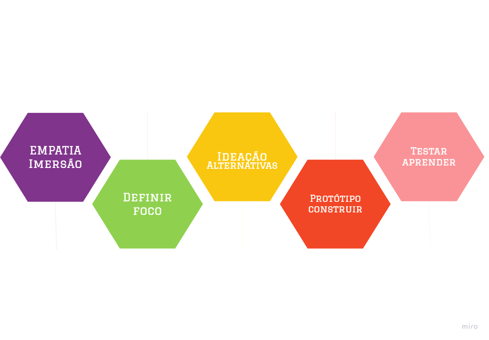

Contexto
Vets Haustier
Assistência veterinária domiciliar e teleorientação
O app Vets Haustier é a opção de aplicativo para cuidados direcionados aos animais de estimação de diferentes espécies. Ideal para quem busca cuidados de saúde e bem estar para seus pets. Trata-se de alternativa prática para acesso a serviços em domicílio como banho e tosa, consulta veterinária, vacinação, teleorientação e orientações a respeiro das doenças mais comuns.
Recebi o desafio de Desenvolver um e-commerce para vender um determinado serviço, neste caso a contratação de serviços veterinários em domicílio por meio de uma solução on-line. Antes de ir direto ao tema foi realizado uma pesquisa para saber como estava o cenário atual.
Cenário Atual
Segundo o abinpet os mais de 141 milhões de pets brasileiros movimentam cerca de R$40 bilhões ao ano. Mesmo na pandemia houve um grande crescimento e o Brasil se destaca como o terceiro maior mercado pet do mundo.
Segundo a revista Exame a pandemia diminuiu o número de consultas presenciais e aumentou o número de tutores buscando por orientações veterinárias em meios digitais. Segundo a mesma revista, em 2020 durante a pandemia houve crescimento de 13,5%.
Portanto, com a pandemia da Covid-19, os serviços de e-commerce ganharam
mais protagonismo no comércio brasileiro e mundial, uma vez que muitas pessoas passaram a evitar as
aglomerações
humanas oferecidas pelos
grandes centros comerciais, atacadistas e varejistas tradicionais,
optando cada vez mais por receber suas compras e serviços em suas residências.
O desafio
"A dor que originou o interesse no assunto e norteou o presente projeto foi: Como ajudar o tutor a ter um atendimento veterinário no conforto de sua casa?"
Identificação do Processo de Design - Design Thinking
Para a realização deste projeto optou-se pela utilização do Design Thinking que leva em consideração uma abordagem que busca a solução de problemas de forma coletiva e colaborativa, em uma perspectiva de empatia máxima com seus stakeholders (interessados). Em síntese, as pessoas são colocadas no centro de desenvolvimento do produto e não somente o consumidor final, mas todos os envolvidos na ideia.
O processo consiste em tentar mapear e mesclar a experiência cultural, a visão de mundo e os processos inseridos na vida dos indivíduos, no intuito de obter uma visão mais completa na solução de problemas e, dessa forma, melhor identificar as barreiras e gerar alternativas viáveis para transpô-las. Não parte de premissas matemáticas, parte do levantamento das reais necessidades de seu consumidor; é uma abordagem preponderantemente “humana”, usada em qualquer área de negócio.